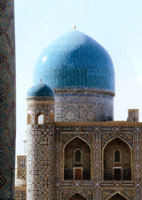

| Ислам http://schools.keldysh.ru/school1413/religija/islam.htm |
|  |
| Слово “ислам” в переводе с арабского означает “покорный Аллаху” (“Аллах”- это имя Бога). Последователи ислама называют себя словом “муслим” (с арабского - “преданный Аллаху”). В русском языке это арабское слово преобразовалось в слово “мусульманин”. Согласно данным энциклопедии “Народы и религии мира” (М., 1888, с.738), в 1996 году в мире было свыше 1 100 млн. мусульман.
Ислам возник в начале VII века на западе Аравийского полуострова. Главными городами того региона, где возник ислам были города Мекка и Ясриб. Впоследствии Ясриб был переименован в Мадинат ан-наби (Город пророка), а еще позже утвердилось сокращённое название этого города: Медина (Город). Сейчас территория, где возник ислам, вместе с городами Меккой и Мединой, входит в государство, которое называется Саудовской Аравией. У ислама был основатель. Верующие считают его великим пророком. Его имя произносят и как Мухаммед, и как Мухаммад (с арабского - “Прославленный”). Второй вариант ближе к арабскому произношению имени основателя ислама. Мухаммад родился в 570 г. в Мекке, а умер в 632 г. в Медине. Сначала он был пастухом, а после женитьбы на богатой вдове стал купцом. В 610 г. у него появились “видения” (он видел то, что не видели другие: ангела, таинственные, прекрасные деревья и др.) и “речения” (он слышал то, что не слышали другие: голос Аллаха, голос ангела и др.). Голоса передавали ему содержание священной книги, которая называлась словом Коран (“Чтение вслух”), и повелевали ему осуждать многобожие и проповедовать веру в Аллаха. И вот в возрасте сорока лет Мухаммад и начал свою проповедническую деятельность. Во второй половине VII века первоначальный ислам разделился на две конфессии : суннизм (от “сунна” - “образец”, “пример”, “путь”) и шиизм (от “шиа” - “партия”, “группировка”). В VIII веке от шиитов отделилась конфессия, сторонники которой стали называть себя исмаилитами (по имени одного из духовных вождей VIII века - Исмаила). Суннизм, шиизм и исмаилизм - это три основные конфессии ислама. Всего же в исламе несколько десятков конфессий ( существуют еще друзы, зейдиты, ибадиты и др.). Наиболее распространённая из них - суннизм, сторонниками которой являются около 80 процентов мусульман мира. Всего в мире на конец 1998 года было 44 мусульманских страны. В этих странах мусульмане, как минимум, преобладали среди верующих, а, как максимум, и среди населения. Одна из этих стран расположена сразу и в Европе, и в Азии (Турция), одна - в Европе (Албания), 16 - в Африке (Египет, Алжир, Судан, Марокко и др.) и 26 в Азии (Саудовская Аравия, Иран, Ирак, Афганистан и др.). В 40 мусульманских странах среди верующих преобладают сунниты и только в четырёх - шииты (Иран, Ирак, Азербайджан и Бахрейн). В России ислам по распространённости вторая после православия конфессия. Как мы уже указывали в первой главе, в нашей стране более 70 процентов среди верующих составляют православные, около 20 процентов - мусульмане, около 10 процентов - сторонники других конфессий. В России есть три региона, где среди верующих преобладают мусульмане: Северный Кавказ (включающий в себя шесть республик с преимущественно мусульманским населением: Чечня, Ингушетия, Кабардино-Балкария, Дагестан, Адыгея и Карачаево-Черкессия), Татарская республика и Башкирская республика. Во всех крупных городах России, где среди верующих преобладают православные, вместе с тем имеются мусульмане и мусульманские мечети. Священные книги ислама можно разделить на две группы. В первую группу входит одна книга, которая называется “Коран” (с арабского - “чтение вслух”). Коран - это и одна книга-произведение и одна книга-том. Во вторую группу входит целое собрание священных книг, объединенное общим названием “Сунна” (с арабского “образец”, “пример”). В этом собрании шесть книг-произведений и около ста книг-томов. В литературе Сунну называют ещё “Преданием”. По вероучению ислама, существуют два вида Корана: небесный (Коран-оригинал) и земной (Коран-копия). Небесный Коран никто не создавал, он был всегда. Он существует в единственном экземпляре и хранится под троном Аллаха. В то же время небесный Коран чудесным образом содержит в себе прямую речь Аллаха. Земной Коран существует во многих экземплярах. Но точной копией небесного Корана является только земной Коран на арабском языке. Содержание земного Корана Бог передал людям по своеобразной цепочке. Аллах диктовал содержание Корана ангелу Джабраилу, ангел - пророку Мухаммаду, Мухаммад в виде проповедей - своим ученикам. Ученики Мухаммада частично записывали проповеди Мухаммада, частично запоминали их и заучивали наизусть. После смерти Мухаммада при халифе Османе был записан полный текст Корана. Коран делится на 114 сур (сура с арабского - “глава”), суры делятся на части, которые называются аятами (аят с арабского -“чудо”, “знамение”). Сунна, по вероучению, есть собрание изречений Мухаммада и рассказов о его жизни. И целостные смысловые изречения Мухаммада, и рассказы о его жизни называются хадисами (хадис с арабского - “рассказ”). Поэтому Сунну называют также собранием хадисов. Автором изречений считается, естественно, сам Мухаммад. Авторами рассказов о его жизни считаются современники Мухаммада. Все хадисы, по вероучению, долгое время существовали устно. Позднее, в IX-X вв., их записали видные богословы. Их имена: Бухари, Нишапури, Маджа, Сиджистани, Нисаи и Тирмизи. Они и считаются авторами-составителями сборников хадисов. В исламе признаётся существование шести групп сверхъестественных существ. Это: Бог, ангелы, злые джинны, добрые джинны, гурии, Бурак. Бога зовут Аллах. В переводе с арабского языка на русский “Аллах” и означает “Бог”. Но в настоящее время это слово воспринимается верующими как имя собственное. Бог один, и, по мусульманскому вероучению в отличие от христианского, Он существует в единственном лице. Аллах сотворил землю, все живые существа, семь небес, рай (на седьмом небе) и ад (ниже первого неба). Выше седьмого неба размещается трон Аллаха. Аллах - “Господь мира”, т.е. он непосредственно управляет всеми событиями во Вселенной. Аллах имеет 99 прекрасных эпитетов: Единый, Вечный, Всевышний, Великий, Славный, Всемогущий, Всевидящий, Всезнающий, Милостивый, Милосердный, Карающий, Владыка Судного дня и др. Слово “джинны” переводится как “духи”. Джинны - это особого рода живые существа, созданные Аллахом из огня, они делятся на злых и добрых. Функции каждой из этих двух групп джиннов соответствует их эпитетам: злые джинны противятся воле Бога и творят зло, добрые являются помощниками Бога и творят добро. После сотворения их Аллахом все джинны творили только зло. Но всё изменилось после проповеди Мухаммада, обращенной не только к людям, но и к джиннам. Часть джиннов перевоспиталась, стали вести себя, как ангелы, и главное: стали помогать Мухаммаду и его последователям распространять ислам. Добрых джиннов называют ещё джиннами-мусульманами. Все злые джинны стремятся причинить вред людям. Но среди этих джиннов выделяются особенно зловредные, их называют “шайтанами” (от еврейского “сатан” - “противник”). У джиннов есть плоть: в своем обычном виде они уродливы, с копытами на ногах, но могут принимать и человеческий облик. Они делятся на старших и младших. Существует еще одно сверхъестестественное существо. Его называют словом “Бурак”. Это и название вида этого существа, и его имя собственное одновременно. “Бурак” переводится с арабского как “Молния” или “Молниеносный” . Бурак выглядит следующим образом: тело, как у самого прекрасного коня, голова, как у человека, и крылья, как у орла. Его имя подчеркивает ту скорость, с которой он летит по небу. Учение о Бураке сливается в исламе с той частью учения о пророках, где речь идет о Мухаммаде. В вероучении ислама есть рассказ о том, как однажды ночью к Мухаммаду в Мекке явился ангел Джабраил вместе с Бураком. Бурак в мгновение ока перенес пророка из Мекки в Иерусалим, а затем по лестнице, спустившейся с неба, Мухаммад поднялся наверх для беседы с Аллахом. Согласно вероучению ислама, пророки — это люди, которым Бог дал задание и возможность возвещать людям истину. А истина, которую они возвещали, имела две основные части: истина о правильной религии и истина о правильной жизни . В истине о правильной религии особо важным элементом был рассказ о том, что ждёт людей в будущем. Пророков мусульманские богословы называют термином “наби” (что переводится на русский язык как “пророки”). Их, согласно вероучению, было 124 тысячи человек. Среди наби выделяют 313 человек, которые носят одновременно термин “расул” (“посланники”). Это лица, которые получили от Аллаха не только устные, но и письменные откровения. Таким образом, в исламе все посланники (расул) одновременно и пророки (наби), но не все пророки одновременно и посланники. Среди посланников особым почитанием пользуются 9 человек, которых называют “стойкими пророками”. Восемь из девяти почитают и христиане, но, по мнению мусульман, искажают их имена. Вот как этих восемь пророков называют христиане (в скобках - их мусульманские имена): Ной (Нух), Авраам (Ибрагим), Иаков (Якуб), Иосиф (Юсуф), Моисей (Муса), Иов (Айюб), Давид (Дауд), Иисус Христос (Иса). Что касается восьмого стойкого пророка, то, по мнению мусульман, христиане исказили не только его имя, но и характеристику его внутренней природы. Иса - великий пророк, но не бог, а христиане ошибочно называют его “Богом”. Из девяти стойких пророков самым большим почитанием пользуется девятый - Мухаммад. Только Мухаммад носит титул “Печать пророков”. Это означает, что Мухаммад считается последним и самым великим из пророков. Именно Мухаммаду Аллах дал самое полное и главное письменное откровение - Коран. Два мусульманских праздника связаны с событиями из жизни Мухаммада: мавлюд (с арабского - “рождение”) день рождения пророка и мирадж (с арабского - “вознесение”) - день его вознесения на небо для беседы с Аллахом. В эти дни в мечетях проводятся торжественные богослужения. Мусульманское учение о душе полностью совпадает с тем учением о душе, которое было у античных христиан и сохранилось сегодня во многих христианских конфессиях: в православии, католицизме, лютеранстве, баптизме и др. Вот каковы основные идеи этого традиционного религиозного учения. Душа в отличие от тела - это сверхъестественная часть человека. Душа не зависит от тела, т.е. способна жить и без тела. Душа это не совокупность мельчайших частиц (как, например, учит буддизм), а целостное образование. Души всех людей сотворил Бог, и души всех людей бессмертны. Загробный мир, по вероучению ислама, имеет два отделения: рай (по-арабски: джанна) и ад (по-арабски: джаханнам). В рай направляются праведники, в ад - грешники. Деление людей на праведников и грешников в исламе осуществляется по иному критерию, чем в христианстве. Если в христианстве все люди грешники (за исключением Марии, матери Христа), а праведники это только особая часть грешников, то в исламе праведники и грешники - это две противоположные группы людей. У праведников в жизни преобладают добрые, у грешников - плохие, недобрые поступки. Если у античных христиан пребывание и в раю, и в аду, для попавших туда считалось вечным (и таковым считается и сейчас у многих христианских конфессий), то у мусульман считается, что в раю все пребывают вечно, а в обитатели ада делятся на постоянных и временных “жильцов”. Временными жильцами ада являются грешники-мусульмане: какие бы грехи они ни совершили, рано или поздно Аллах переводит мусульман из ада в рай. Пребывание в загробном мире, мусульманские богословы, как и христианские, делят на два этапа: до Судного дня (существование душ без тел) и после Судного дня (когда в раю и аду души будут пребывать вместе с телами). В Судный день по звуку трубы ангела Исрафила сначала все живые умрут, а затем всё мёртвые (в том числе и те, которые только что умерли) воскреснут. Все люди один за другим пройдут по мосту Сират, протянутому над адом в рай, тонкому как волос и острому как лезвие меча. Праведники успешно пройдут по мосту в рай, а грешники же свалятся в адскую бездну. Каждый мусульманин обязан вести образ жизни, который требует шариат. Шариат (от арабского “шариа” - “правильный путь”) - это свод правил поведения, одобренных мусульманскими авторитетами. Шариат может существовать и в письменной форме (как книги, написанные авторитетами), и в устной форме (как проповеди, произнесённые авторитетами). Шариат - это правила поведения и юридические, и моральные, и бытовые. Это указания, что нужно делать обязательно, что можно делать или не делать и чего нельзя делать ни в коем случае. Именно через шариат находит своё выражение нравственное учение ислама. Шариат опирается на Коран и Сунну. Но Коран и Сунну надо толковать, а толкования могут быть разные. У всех мусульман-суннитов во все времена были один Коран и одна Сунна, но шариатов было много. Конечно, во всех шариатах есть нечто общее, но есть и отличия. В одно и то же время в разных странах в чём-то шариаты провозглашали разные правила поведения. В одной и той же стране в новое время через шариат тоже могут провозглашаться нормы, в чём-то отличающиеся от норм прежнего времени. Так, например, в Афганистане шариат 80-х гг. нашего века разрешал женщинам не закрывать лица чадрой, а мужчинам - не отращивать бороды. В 90-гг. нашего века шариат этой же страны категорически запретил женщинам появляться в общественных местах с открытыми лицами, а мужчинам не иметь бороды. Наличие различий в шариатах разных стран нередко приводит к спорам между мусульманами по вопросу о том, кто из них исповедует истинный ислам. Шариат содержит внутри себя определённые пищевые запреты. В частности шариат запрещает мусульман употреблять в пищу свинину и распивать алкогольные напитки. Нельзя есть мясо акул, крабов, раков, мясо хищных животных. В ряде стран мусульманские авторитеты вводят в шариат не только обязательные предписания и запреты, но и меры наказания за нарушения этих предписаний и запретов (публичная порка, тюремное заключение, отсечение руки, смертная казнь и др.). Служители культа учат, что существуют молитвы трёх видов: шахада (ежедневное свидетельство о вере), намаз (ежедневная пятикратная обязательная молитва) и дополнительная молитва. Шахада (с арабского - “свидетельство”) - это краткая формула на арабском языке: “Ля ильляха ильляляху ва Мухамадун расуль льляхи” (“Нет Бога, кроме Аллаха, и Мухаммад посланник Его”). Шахада произносится только по-арабски, она повторяется несколько раз в день, обязательно включается как частичка в два остальных вида молитвы. Если немусульманин произнес шахаду при двух мусульманах-мужчинах, то он становится мусульманином (правда, при условии, что он до этого выразил желание стать мусульманином). Намаз (с персидского - “молитва”) - ежедневный пятикратный молитвенный цикл. Поэтому можно говорить о совершении мусульманами пяти намазов в сутки. Намаз включает в себя установленные словесные формулы (обязательно на арабском языке), определённые позы (стоя, поясной поклон, на коленях, сидя на пятках) и определённые движения. Совокупность формул, поз и движений называется ракатом. Намаз совершается: первый раз - на рассвете (два раката), второй - около полудня, (четыре раката), третий - между полуднем и закатом (четыре раката), четвертый - после заката (три раката), пятый - перед сном (четыре раката). Перед намазом мусульманин должен совершить омовение, женщины должны молиться отдельно от мужчин. Намаз может совершаться коллективно и индивидуально, в мечети и вне её. Дополнительными считаются все молитвы, которые не являются шахадой (хотя шахада обязательно входит внутрь них как особая молитвенная часть) и намазом. Текст этих молитв мусульманин может составить сам. Эти молитвы могут совершаться (и, как правило, совершаются) на родном языке. Именно через дополнительные молитвы мусульманин выражает свои просьбы к Аллаху. Они могут быть произнесены в любое время суток. Все молитвы мусульмане должны совершать, повернувшись лицом в сторону священного города Мекки. Каждый мусульманин обязан участвовать в борьбе за веру. Борьба за веру обозначается термином “джихад” (“усилие”, “старание”) Мусульманские богословы различают четыре вида джихада. Первый вид - джихад меча . Это участие в вооружённой борьбе с неверными. Такой вид джихада объявляется в ситуации, когда страна, в которой проживают мусульмане, участвует в каких-либо военных действиях. Так, с 1980 по 1988 год воевали друг с другом Иран и Ирак. В обеих странах среди верующих преобладают шииты (правда, в Иране их больше). Духовные руководители обеих стран назвали мусульман соседней страны “неверными” и соответственно взаимно объявили им джихад. Остальные виды джихада существуют постоянно. Второй вид - джихад руки. Имеется в виду принятие определённых дисциплинарных мер в отношении преступников и нарушителей норм нравственности. Как минимум, джихад руки применяется в семье старшими её членами по отношению к младшим. Третий вид - джихад языка. Под этим видом джихада понимается обязанность верующих одобрять окружающих, когда они совершают поступки, угодные Аллаху, и порицать их за нарушение норм шариата. И четвертый вид джихада - джихад сердца, под которым понимается борьба каждого мусульманина с собственными пороками и недостатками. Паломничество в Мекку обозначается в исламе термином “хаджж”. Фактически большинство паломников посещают не только Мекку (город, в котором родился Мухаммад), но и Медину (город, в котором он умер и похоронен; в 450 км. от Мекки). Но обязательным для паломников является только посещение Мекки. Главная идея учения в требовании, обращенном к каждому мусульманину: если он имеет физические и материальные возможности, то обязан хотя бы один раз в жизни или совершить лично паломничество в Мекку, или послать в Мекку своего заместителя. В историческом прошлом требование личного паломничества было единственным. Но по мере увеличения численности мусульман в мире его буквальное выполнение стало нереальным. Тогда и появилась идея о заместителе. Своего заместителя мусульманин обязан обеспечить необходимыми для паломничества денежными средствами, а заместитель, в свою очередь, обязан привезти тому, кого он замещает, документ: свидетельство о совершённом хаджже. Одному мусульманину выдаётся на руки только одно свидетельство, поэтому заместитель должен быть человеком, который в прошлом уже участвовал в хаджже. Паломничество должно совершаться в определённое время года, а именно в последний двенадцатый месяц лунного года (этот месяц называется зу-ль-хиджжа). В хаджже есть обязательная часть (это дни календаря, в которые паломники должны быть в Мекке и её окрестностях) и дополнительная часть ( это дни “до” или “после” обязательной части; в это время паломники могут посетить Медину, а также другие священные места Аравийского полуострова). Паломники должны прибыть в Мекку к 7-му числу мусульманского месяца зу-ль-хидж жа, быть в Мекке и её окрестностях 7 дней и каждый день совершать предписанные для этого дня шариатом обряды. Это: обход Каабы (священного здания во дворе главной мечети в Мекке), испитие воды из священного колодца, семикратная пробежка между двумя холмами (расстояние между ними примерно 300 метров), молитвенное стояние в долине у горы Арафат (18 км. от Мекки) с 12 часов дня до захода солнца (примерно 7 часов), собирание 7-ми камней в другой долине, забрасывание этими камнями в третьей долине каменного столба, который символизирует Шайтана, и в заключение жертвоприношение скота. У мусульман лунный календарь, и поэтому в пересчёте на солнечный время паломничества может оказаться в любом месяце. В последнее время хаджж ежегодно совершают более 2 миллионов мусульман. В обязательные дни хаджжа каждый мусульманин должен быть одет в ихрам (специфическую одежду: два куска белой ткани без швов; в эти куски ткани надо себя искусно завернуть) и ежедневно произносить шахаду не менее 100 раз. В девятый месяц лунного календаря (название месяца - рамадан ; в другом произношении - рамазан) мусульмане обязаны соблюдать пост (с арабского - “саум”, с турецкого - “ураза”). От поста в месяц рамадан с условием соблюдения его в другое время освобождаются те, кто по объективным обстоятельствам не могут его соблюдать именно сейчас: участвующие в военных действиях, находящиеся в плену, находящиеся в пути, больные. Без всяких условий от поста освобождаются дети, престарелые, беременные и кормящие женщины. Заключается пост в полном воздержании в светлое время суток от пищи, питья, курения, развлечений. Для мусульман, живущих в северных регионах, где существуют так называемые “белые ночи” (а ближе к Полярному кругу зимой вообще не бывает света, а летом тьмы), час начала и окончания поста устанавливается решениями мусульманского духовенства. Ислам - вторая религия мира и вторая религия в России. Этот факт уже требует от любого культурного человека изучения ислама. |